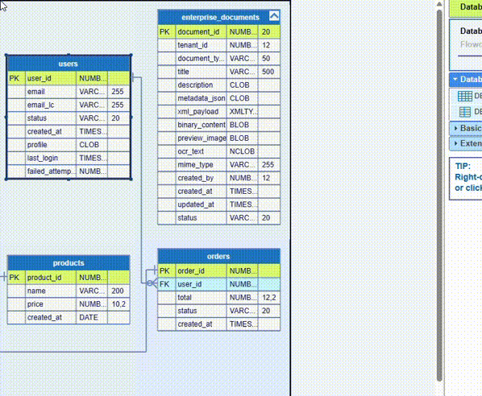
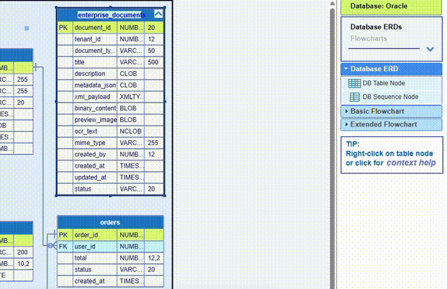

SQL schema Large Object (LOB) storage manages unstructured data types like VARCHAR(MAX), BLOB, CLOB, and XML. JDElite Data Modeler supports the two levels of LOB storage: column level and table level. Databases that handle explicitly LOB storage are: PostgreSQL, Oracle, MySQL, MariaDB, SQL Server, and DB2. They use various syntax and specific data types. JDElite Data Modeler represent the database specific types using a consolidated graphical support.
Here is an example for Oracle column of data type CLOB (Character Large Object), a built-in data type used to store large amounts of character-based text data. It is designed to handle strings that exceed the 4,000-byte restriction of the standard VARCHAR2 data type, holding up to 4 gigabytes or more depending on the database block size.

Next is an example for Oracle table level LOB storage that covers a group of columns with data types CLOB, BLOB - for unstructured raw binary data, NCLOB - a specific type of CLOB. and XMLTYPE - object data type to store, validate, and query XML data:
